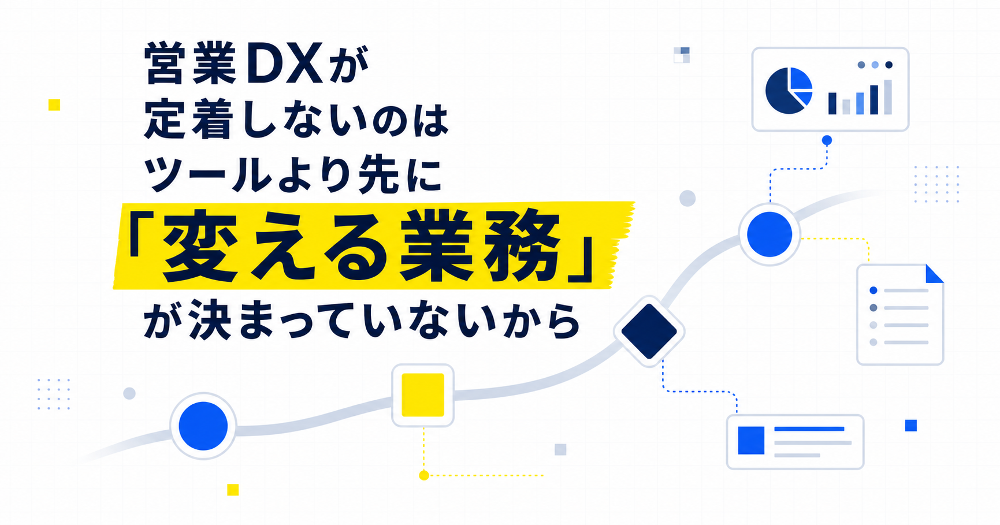
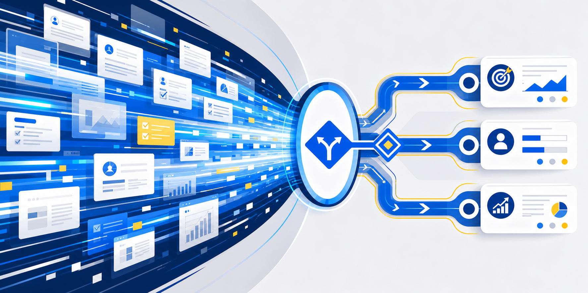
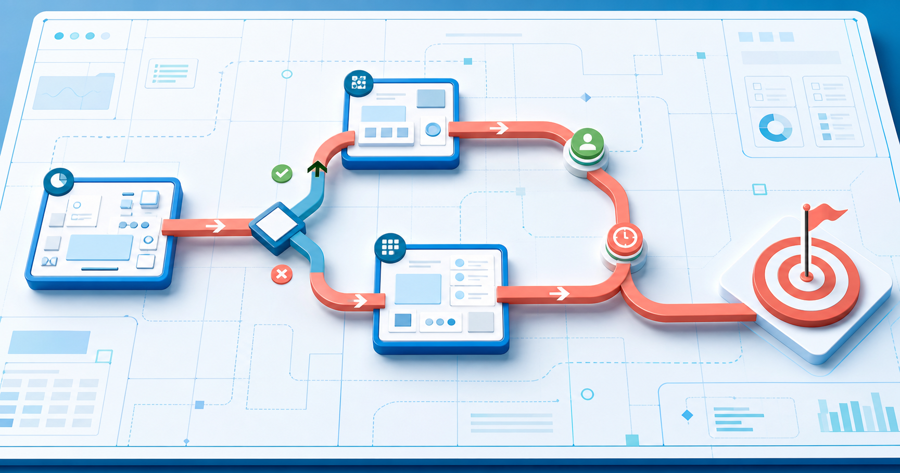
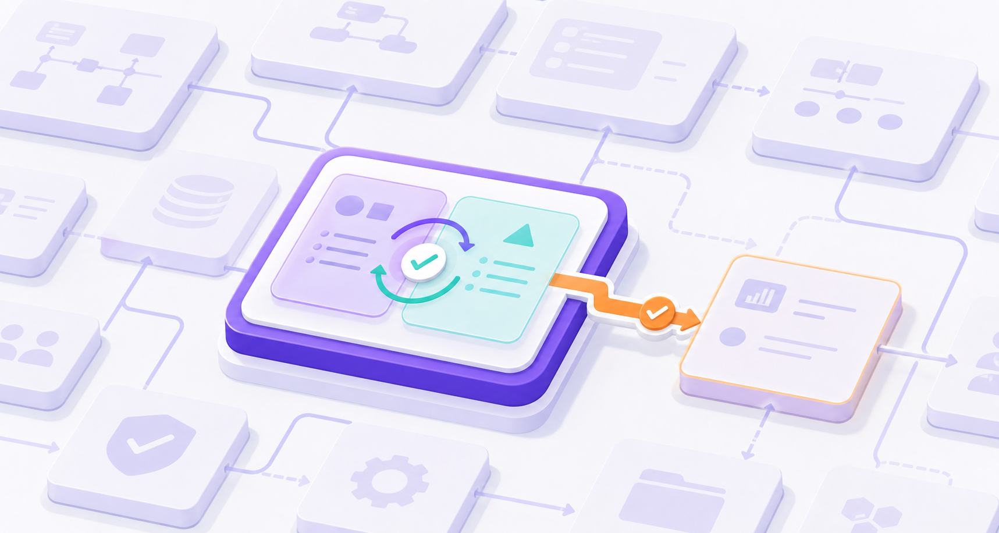
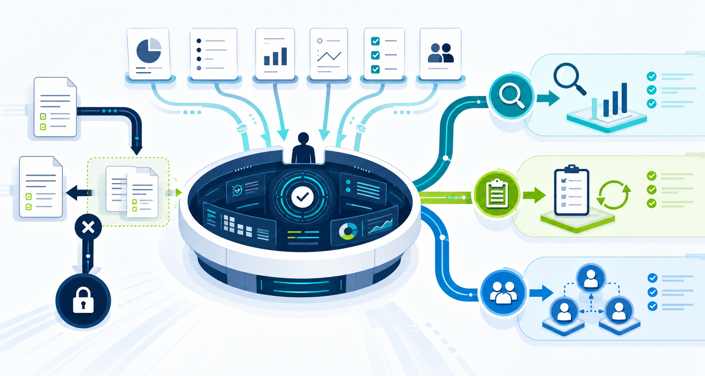
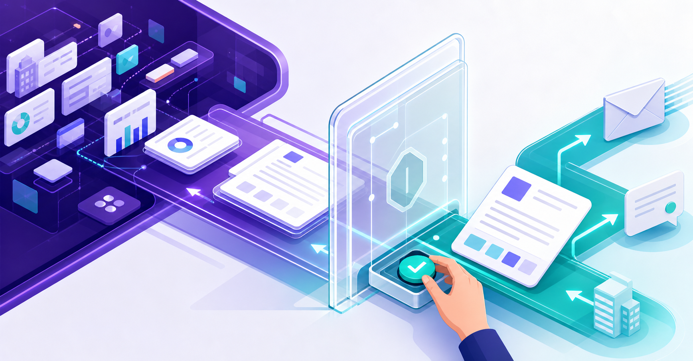
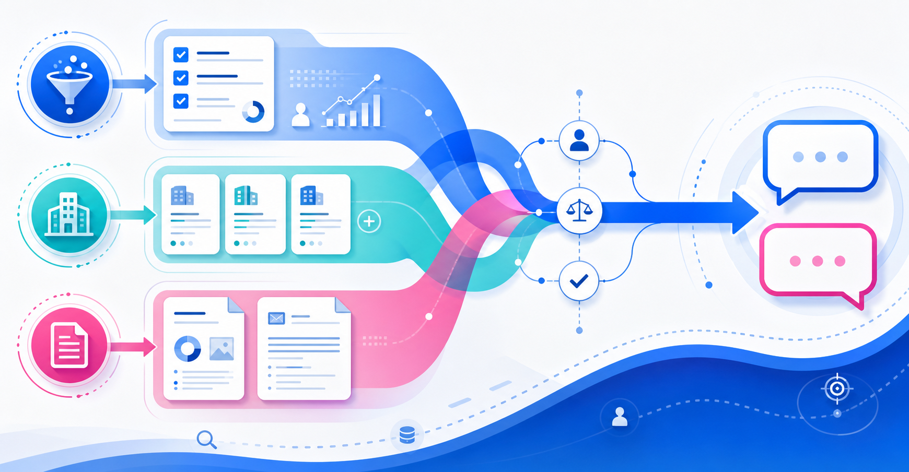

営業DXが定着しないのはツールより先に「変える業務」が決まっていないから
みなさんこんにちは、Valorize AI代表の鈴木創也です。
CRMやSFAで案件情報や数字を確認でき、生成AIで企業調査や資料の下書きも速くなりました。それでも会議前には別のExcelを作り、会議では前週の数字を順番に説明し、会議後には管理職が担当者一人ひとりから状況を聞き取っています。
こうした二重作業が残っているなら、デジタル技術を導入しても、営業の進め方は変わっていません。ツールの追加や変更を検討する前に、どの業務場面で、誰の判断と行動をどう変えるかを先に決めます。
ツール導入後も変わらない営業の判断と行動

記録の電子化、集計の自動化、文章の生成は、作業を速くします。しかし、重点顧客をどう選ぶか、どの案件に誰が支援に入るか、顧客に何を提案するかは、人が判断します。作業時間だけを短縮しても、これらの判断とその後の行動が同じなら、従来の営業を速く進めているにすぎません。
IPAの「DX推進指標のご案内」は、経営のあるべき姿と現状の差を関係者で共有し、具体的な行動につなげるための指標です。重点分野を決め、定期的に達成度を振り返る使い方が示されています。この指標は企業全体を対象としています。営業部門に当てはめると、変えたい業務と到達点を定め、定期的に運用を見直す必要があります。
まず、どの業務を変え、その業務のどの課題を解決するかを決めます。例えば、会議資料の作成時間を短縮する、重点顧客への提案準備を充実させる、支援が必要な案件を早く見つけるといった課題を分けて考えます。目的が違えば、必要な情報も、ツールに任せる処理も、人が担う判断も変わります。
国内の営業現場でも、生成AIの利用を許可するだけの会社と、業務プロセスに組み込んでいる会社では、利用頻度に差があるという調査結果があります。HubSpot Japanの「日本の営業に関する意識・実態調査2026」では、会社が生成AIの利用を許可するだけの場合、週1回以上利用している回答者は47.2％でした。一方、生成AIを業務プロセスに組み込んでいる場合、週1回以上利用している回答者は74.8％でした。この調査はベンダーが企画した自己申告式のオンライン調査であり、確認できるのは利用頻度の差までです。業務への組み込みが利用率を高めたという因果関係や、売上への効果は確認できません。この結果は、利用許可と業務への組み込みを分けて捉える必要があることを示しています。
営業DXで最初に決める四つの設計項目

営業DXの対象を絞るときは、業務場面、判断、行動、成果の確かめ方の順に整理します。この四項目は、営業部門で運用を組み立てるために本記事が独自に整理したものです。
1. 変えたい業務場面
「営業全体をDXする」では、範囲が広すぎます。新規開拓の初回準備、週次会議での支援依頼、失注後の振り返りなど、繰り返し発生する場面を一つ選びます。
選んだ場面で、何に困っているのかも具体化します。時間がかかること、判断が遅れること、顧客への提案に必要な情報が不足することは、別々の課題です。解決したい課題が混ざると、集めるデータを増やしても、どの変化を目指すのか分からなくなります。
2. 変えたい判断
業務場面を選んだら、そこで誰が何を決めるのかを定めます。重点顧客への提案準備であれば、追加調査が必要な企業を誰が選ぶのか、営業責任者がどの条件で支援に入るのか、担当者が次回の商談までに何を確かめるのかをそれぞれ決めます。
何を判断するかが曖昧なまま集める情報を増やすと、判断に使われない報告項目が増えやすくなります。判断する内容を明確にすれば、「あれば便利な情報」と「判断に必要な情報」を区別できます。
3. 変える行動
判断を下した後に、誰が、いつまでに、何をするかを定めます。会議で「注視する」と決めるだけでは、その後の営業活動は変わりません。誰が企業情報を追加で調べるのか、誰が提案仮説を見直すのか、いつ顧客に確認するのかまで決めます。
現場に新しい情報の入力を求める場合も、その情報をどの判断に使い、判断に基づいて管理職がどう支援するのかを示します。情報を入力しても判断や支援が変わらなければ、担当者にとっては作業が一つ増えただけです。
4. 成果の確かめ方
営業DXの効果は、作業時間と業務上の変化の両方で確かめます。選んだ業務場面に応じて、判断までの時間が短くなったか、準備に必要な情報がそろったか、決めた行動を実行できたか、顧客への提案が変わったかを確認します。
IPAの「DX動向2025」では、DXの成果を把握する指標を設定している日本企業は3割以下で、成果が「わからない」という回答は26.2％でした。調査対象には、事業会社の人事部門、情報システム部門、DX推進部門など、営業以外の部門が含まれます。これらの数値は、調査対象となった日本企業の多くが、成果指標の設定と成果の把握に課題を抱えていることを示しています。
全社展開の前に一つの業務で小さく確かめる

四項目を決めても、すべての営業工程、会議、データを同時に変えれば、どの変更がどの結果につながったのかを切り分けにくくなります。試行には、毎週繰り返し発生し、現場と管理職の双方が変化を確認できる場面を選びます。
例えば、特定のチームが行う重点顧客との商談準備を選んだとします。準備に必要な情報と顧客に確認する事項を決めます。さらに、誰が追加調査の要否を判断するか、いつまでに確認するかも定め、この運用を一定期間試します。試行の対象には、現状の負担と行動を把握し、変更後と比較できる業務場面が適しています。重点顧客との商談準備は、その選び方の一例です。
集める情報も絞ります。企業の基本情報、直近の事業上の変化、既存のやり取りなど、その場面での判断に使う情報を決め、使いどころのない項目は増やしません。情報の網羅性よりも、必要な時点までにそろい、次の行動に使えることを優先します。
NTTデータが紹介するテプコカスタマーサービスの営業業務変革PoCでは、営業活動全体のプロセスを構造化して課題を抽出し、各業務でAIに担わせる役割を決めました。提案書の作成では、AIや計算式で下書きを補助し、営業担当者が顧客との対話で得た情報を反映して正式な提案書を仕上げています。このPoCは特定の企業と商材を対象としています。営業の流れと課題を先に整理し、その後で技術と人の役割を割り当てる順序は、ほかの営業業務を試す際にも参考になります。
試行後は、最終的な成果と途中で生じた問題の両方を確認します。判断に必要な情報は必要な時点までにそろったか、誰の行動が変わったか、新たな作業負担が増えすぎていないかを振り返ります。期待した変化が出なければ、現場の意識だけで説明せず、業務場面、判断、情報、行動のどこに無理があったかを見直します。
ただし、小さな試行を繰り返すだけでは、営業組織全体の業務を変えることにはつながりません。期待した変化を確認できた場合は、その方法を関係者の共通ルールとして定め、役割分担と前後の業務への引き継ぎも決めます。試行は局所的な改善で終えず、検証結果を基に次の適用範囲を決めるところまで進めます。
管理職が担う情報活用と運用の見直し

営業DXで新たな情報共有を求める場合、その目的は、顧客対応の準備を整え、対応の優先順位と管理職の支援内容を決めやすくすることです。管理職は、どの情報をいつ使って何を判断し、その結果に基づいて担当者をどう支援するのかをあらかじめ示す必要があります。
例えば、重点顧客の状況を毎週入力してもらうなら、会議でその情報を確認し、必要に応じて追加調査、提案の見直し、支援者の割り当てを決めます。使われないデータが増えた場合は、現場に入力を促す前に、入力項目や会議の運営方法を見直します。二重入力や使われない資料の作成をやめる判断も営業DXに含まれます。
経済産業省の「デジタルガバナンス・コード3.0」は、DX戦略の達成度を測る指標を定め、経営者が事業部門やIT部門と協力して課題を把握し、戦略の見直しに反映することを示しています。このコードは企業経営全体を対象とする指針です。営業部門に当てはめるなら、ツールの利用を求めた管理職が、業務上の成果を確認し、運用を見直す責任も担うということです。
運用を見直すときは、技術の使い方、業務の流れ、人の役割を一緒に確認します。情報収集や集計はツールで補い、どの顧客に対応し、何を提案するかは人が決めます。管理職は必要な支援と振り返りを担います。選んだ業務場面に合わせて、ツールの使い方、研修内容、評価制度を必要に応じて整えます。
AIを使う範囲は業務とリスクから決める

AIは、企業情報の収集、企業の変化に関する情報の整理、提案仮説や会議資料の下書きに使えます。これらの準備作業をAIで補助すれば、営業担当者と管理職は、顧客の状況をどう捉え、何を提案するかという判断に時間を使えます。
経済産業省の「AI事業者ガイドライン（第1.2版）」は、AIへの過度な依存を避け、AIの性質、用途、リスクに応じて人が制御できる仕組みを設けるという考え方を示しています。営業メールや提案書についても、AIの用途と、誤りが生じた場合の影響に応じて確認手順を決めます。
営業では、誤った企業情報や数値、不適切な提案が顧客との信頼関係に影響します。そのため、顧客へ示す企業情報や数値、提案内容、文面は、人が確認してから確定する運用が必要です。どの準備作業をAIに任せ、どの段階で人が確認するかを、導入前に業務手順に組み込みます。
AI活用の効果を確かめるときは、利用回数に加えて、準備時間が短くなったか、AIが準備した情報が判断に使われたか、顧客への提案や対応が変わったかまで確認します。
営業DXを営業業務の変化につなげる

CRM、SFA、ダッシュボード、生成AIを導入した後も別の資料を作成し、担当者への個別確認が残るなら、ツールの使い方と営業の進め方を併せて見直します。どの営業業務を変えるのか、誰が何を判断するのか、判断後に誰が動くのか、どの変化を基準に運用を継続または見直すのかを定めます。
まずは一つの業務場面で運用を試し、実際の変化と新たな負荷を確かめます。その結果を踏まえて役割分担を見直し、前後の業務にも反映します。この検証と見直しを重ねることで、デジタル技術が営業の進め方に組み込まれます。
Valorize AIが提供するSales Triggerは、人が定めた対象企業の条件を基に、企業リストの作成、各社の情報収集、提案内容や連絡文面の下書きを半自動化するAIエージェントサービスです。企業調査と提案準備の負担を減らし、営業担当者がどの顧客を優先し、何を提案するかを判断して、顧客との対話に集中できるよう支援します。送信前に人が文面を確認できるため、準備はAIで補助し、対外送信の判断は人が担う運用を選べます。